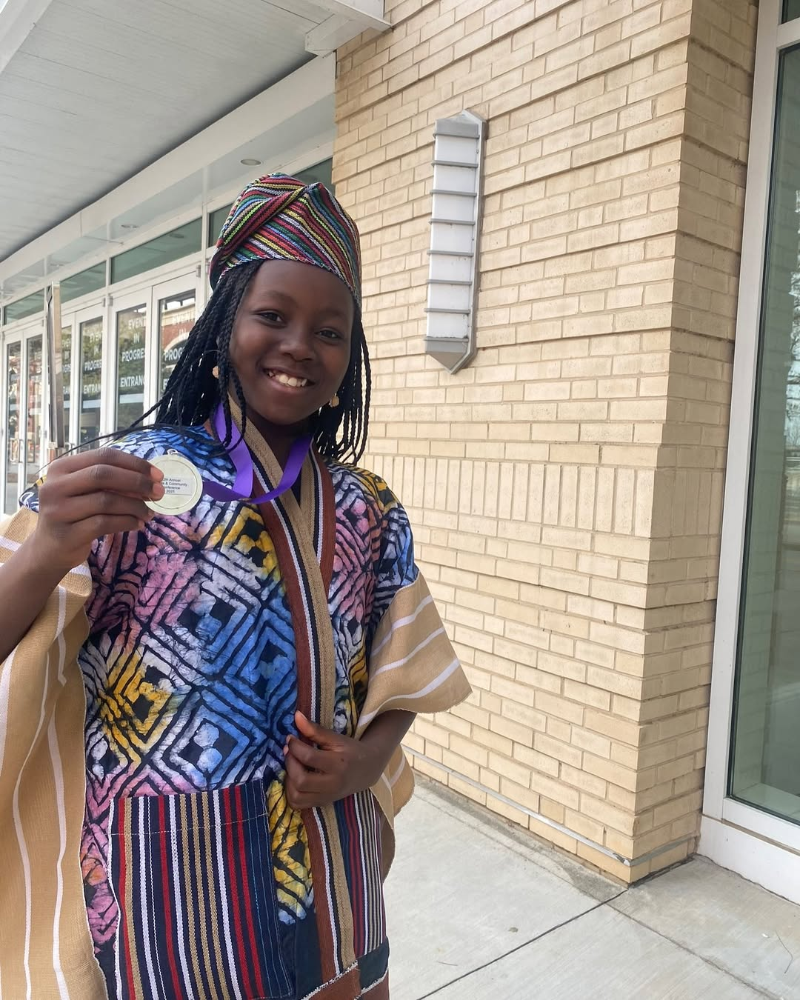

Empowering Minds: Queen Vee Chess Academy’s Mission to Help IDP Kids Through Chess
The Vision Behind Chess for Kids
Vivian Ibrahim’s mission goes beyond simply introducing children to a board game. She sees chess as a tool to sharpen their mental capacity, instill strategic thinking, and provide a constructive outlet during uncertain times. “For me, it is about using chess to help them through situations of uncertainty,” she explains. “It occupies their minds positively and gives them access to opportunities in life, especially here in Adamawa State and, by extension, anywhere possible in Nigeria.”
Building Foundations for Change
The Chess for Kids program officially began earlier this year in IDP camps across Adamawa State. However, the foundation for this initiative was laid long before. Through the Queen Vee Chess Academy, Vivian had already been teaching children how to play chess and organizing tournaments in Yola and neighboring areas. These activities aim to inspire a sense of achievement, confidence, and joy among children who may otherwise lack such opportunities.Challenges and the Power of Resilience
Despite its noble mission, the program faces significant financial hurdles. Unlike many NGO-driven initiatives, Chess for Kids currently lacks external sponsorship. Vivian has relied on her own resources and the generosity of friends and family to keep the program running. “The sponsorship is from my pocket and also donations from family and friends,” Vivian shares. Her dedication is further evident in her personal journey. With a Master’s degree in Computer Science, she began lecturing at Adamawa State Polytechnic in 2018. Although she lost her job in 2019 due to a change in government, she didn’t let setbacks deter her. Instead, Vivian diversified her efforts, starting a thriving business making perfumes and hair cream. Her entrepreneurial spirit has helped sustain her vision for empowering children through chess.A Call for Support
Queen Vee’s efforts exemplify the profound impact one individual can have on a community. However, the program’s potential could be exponentially amplified with the right support. Sponsorship and partnerships could help scale this initiative, reaching more children across the state and beyond. By investing in these children’s mental development and offering them a platform to thrive, the Chess for Kids program is planting seeds of hope, resilience, and future leadership.How You Can Help
Whether through financial support, volunteering, or spreading awareness, there are many ways to contribute to this incredible cause. Together, we can ensure that more children discover their potential, one chessboard at a time. Join Queen Vee in her mission to change lives—because every move on the chessboard can lead to a better future. Back to Blog